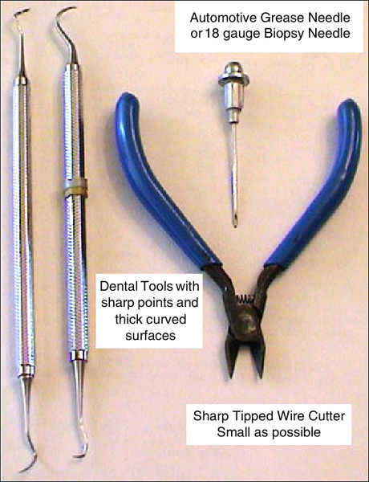

Operating Documentation
Direction 5193891-800, Rev# 5
LightSpeed 5.X Pro16 Limited Access Service Information (Adv)
Operating Documentation |
| Required Persons | Preliminary Reqs | Procedure | Finalization |
|---|---|---|---|
| 1 |
If you are reading this you are in desperate trouble. A male pin is broken off in a female socket. You have two choices:
Replace the DAS Chassis if pin is in the backplane BGA connector or replace the Detector if pin is in a flex lead.
Attempt to remove the broken pin.
| NOTE: | Do not break a pin off a good interposer so it will fit. Microphonics
noise and/or image artifacts will result. There is no specific procedure for this action. These are suggestions that may save you significant time and expense. |
Procedure Objective
Use the sharp pointed tool to raise the broken pin out of the female socket. Raise it enough so that a fine tipped wire cutter can extract the pin fully.
You will need a magnifying glass, ESD protection, Nitrile gloves and very sharp strong pointed tools.
Use ESD wrist strap & Nitrile gloves to prevent further damage to detector FETs or DAS electronics.
Procedure Summary
Lower table and lock gantry at the 6 O’clock position.
Steady your hands on your knees or other surface.
Carefully raise broken pin out of the female socket.
Remove broken pin.
Install new interposer.
Verify proper operation.
| Item | Qty | Effectivity | Part# | Manufacturer | |
|---|---|---|---|---|---|
| Magnifying glass | 1 | - | - | - | |
| Dental tools | - | - | - | ||
| Sharp side cutters | - | - | - | ||
| Automotive grease needle or Biopsy needle, 18 gauge or larger | 1 | - | - | - | |
| DAS/Detector Service Kit | 1 | - | - | - | |
| ELECTROCUTION HAZARD. | |
| HIGH VOLTAGE PRESENT. | |
| USE PROPER LOCKOUT/TAGOUT PROCEDURES BEFORE REPLACING COMPONENTS. |
| CRUSH HAZARD. | |
| UNEXPECTED GANTRY ROTATION CAN CAUSE SERIOUS INJURY. | |
| NEVER SERVICE THE GANTRY WITH THE AXIAL DRIVE ENABLED. |
| Condition | Reference | Eff |
|---|---|---|
DAS Air Plenum removed. | - | - |
Good lighting. | - | - |
Move the table to its lowest position.
Place the DAS near 6 O’clock and lock it in place. This will allow you to sit comfortably and use your knees as a resting place to keep your hands steady.
| Always turn OFF the HVDC before the 120 VAC. Turning OFF 120 VAC power before HVDC power can result in equipment damage. | |
Turn OFF Axial Enable, HVDC, and 120VAC switches on the Service Switch panel.
Lock the gantry in position, using the rotational lock.
Use the magnifying glass to closely inspect the broken male pin. A small section should be visible since the female socket is cone shaped. Male pins generally break off at the base.
Use a biopsy needle (18 gauge or larger) or a dental pick with a thick working surface. See Illustration 1.
Illustration 1: Emergency Interposer Pin removal tools

| NOTE: | Note the following:
|
Be very careful not to damage the female connector. Deep scratches or
gouges are bad and the component would need to be replaced.
| |
Remove raised pin with side cutters or needle nose pliers.
Install new interposer.
| Always turn ON the 120 VAC before the HVDC. Turning ON HVDC power before 120 VAC power can result in equipment damage. | |
Do the following:
Assemble gantry and restore power.
Allow DAS to warm up for 1 hour.
Perform Image Quality testing.